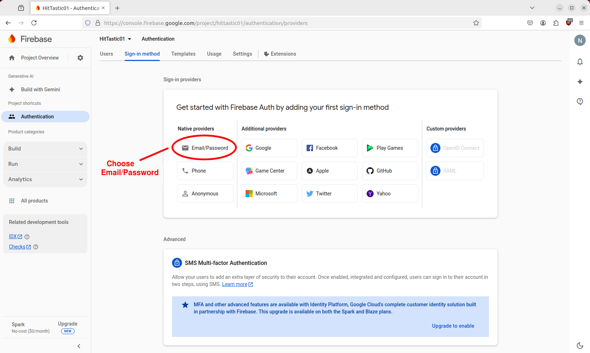

(Credits: notes partly taken from the originals from the previous lecturer Joe Appleton, with amendments and additional information added)
This week we will introduce the world of serverless systems by taking a look at Firebase.
Essential Reading
Firebase
This section is based on Joe Appleton's notes but amendments have been made.
Firebase is a cloud infrastructure service that was acquired by Google in 2015 - it effectively is a sub-product suite of the cloud platform. At the time of writing, Firebase offers a range of web-enabled services, the most popular being:
- Authentication
- The Cloud Firestore Database
- Cloud Functions
- Hosting
Firebase, and other infrastructure as a service platform, delegate the need to manage infrastructure away from the developer. This is particularly appealing if you are working in a small team, or, as a solo developer. What's more, for our use, it has a very generous free tier.
Getting Started
Task 1 - Setting Up Firebase
The purpose of this task is simply to set up a firebase account, create a project and register your first application - it is much easier than it sounds.
First of all go to the Firebase homepage. Make sure you're logged in with your Google (GMail) account (create one if you do not have one already).
Then, go to the Firebase Console. This is the main page for managing your Firebase applications:

Next, create a project and name it whatever you like when prompted:
Within your project, register a new web application:
This will then give you a screen such as that shown below, which will detail how to start your project. In particular, it gives you configuration code, including such things as your API key (keep private!) and project ID. You should copy and paste the sample code into your own code.
It will look something like this:
const firebaseConfig = {
apiKey: "xxxxxxxxxxxxxxxxxxxxxxxxxxxxxxxxxxxx",
authDomain: "web-dev-practical.firebaseapp.com",
databaseURL: "https://web-dev-practical.firebaseio.com",
projectId: "web-dev-practical",
storageBucket: "web-dev-practical.appspot.com",
messagingSenderId: "1030945380946",
appId: "1:1030945380946:web:ae1bca104338f617df9d8b",
measurementId: "G-321SW2SPSG"
};
We then need to create a Firebase app (of type FirebaseApp). We use the initializeApp() function to do this, which can be imported with:
import { initializeApp } from '@firebase/app';
then called with the configuration object above:
const app = initializeApp(firebaseConfig);
Adding Firebase features
We are going to use Firebase Authentication and the Cloud Firestore within our app. If you select your app from the console you will see a screen like this:
Ensure that both Authentication and Cloud Firestore are selected, as shown above.
Firebase Authentication
The first Firebase product we will use is Firebase Authentication. Firebase Authentication gives you a standard secure and flexible cloud authentication service. You can choose to either use standard email/password authentication or third-party providers such as Google, Facebook, GitHub, etc.
You can select an authentication provider as follows:

Setting up Firebase in our project is fairly straightforward. First, we need to import our dependencies, this is included in the sample code when you create a Web project.
...
import { initializeApp } from "firebase/app";
...
Next however we need to import what we need from Firebase Auth. Add this import statement:
import {
getAuth,
createUserWithEmailAndPassword,
signInWithEmailAndPassword,
onAuthStateChanged,
updateProfile
} from "firebase/auth";
This imports various functions we will use.
To start using Firebase Authentication we use the getAuth() function. This gives us an object of type Auth which is our general authentication manager.
const auth = getAuth();
Signing up a user
We can then signup a user with createUserWithEmailAndPassword():
try {
const userCredential = await createUserWithEmailAndPassword(auth, email, password);
// Signed up
const user = userCredential.user;
alert(`ID of new user: ${user.uid}`);
} catch(error) {
alert(`ERROR: Code: ${error.code}, full message: ${error.message}`);
}
This function takes our original Auth object, an email and a password as parameters and returns a promise which will resolve once the user has been added to Firebase. It resolves with an object of type UserCredential representing the user credentials. This contains an object of type User (the user property) which itself contains a uid property containing a unique ID for this user.
If there are any errors with the signup process (these can include invalid email address or insufficiently complex password) the promise will reject and the catch block will run.
Logging in
Logging in has very similar logic to signing up:
try {
const userCredential = await signInWithEmailAndPassword(auth, email, password);
// We can get the user object again if we need it
const user = userCredential.user;
alert(`Logged in successfully! Email=${user.email}`);
} catch(error) {
alert(`ERROR: Code: ${error.code}, full message: ${error.message}`);
}
Logging out
Logging out is very easy, just use the signOut() method of the Auth object:
try {
await auth.signOut();
} catch(error) {
alert(`${error.code} ${error.message}`);
}
Adding a display name
To add a display name (real name, e.g. Alan Smith) you can update the user profile. This can be done immediately after the code to signup a user:
const profile = await updateProfile(user, {
displayName: name
});
Detecting changes in authentication state
Firebase Authentication allows us to easily detect changes in authentication state (i.e. logged out to logged in, and vice-versa). To do this, we specify a callback function which runs each time authentication state changes with onAuthStateChanged():
onAuthStateChanged(auth, user => {
if(user) {
document.getElementById('btnLogout').style.display = 'inline';
document.getElementById('btnLogin').style.display = 'none';
} else {
document.getElementById('btnLogout').style.display = 'none';
document.getElementById('btnLogin').style.display = 'inline';
}
});
The callback receives the original Auth object and a user object representing the currently logged-in user. This will be null if the user is logged out. In this example, we include logic to show or hide the login and logout buttons appropriately. If the user has logged in we show the logout button and hide the loginbn button, while if they have logged out we do the reverse.
Detecting if a user is logged in at any time
We may wish to detect, at any time (not just when the user logs in or logs out), whether the user is currently logged in. We can use the currentUser property of the Auth object (type User) to do this. It will be null if the user is not logged in. For example:
document.getElementById('btnAccessProtectedResource').addEventListener("click", e => {
if(auth.currentUser) {
alert(`${auth.currentUser.displayName || auth.currentUser.email}, here is your confidential information ....`);
} else {
alert("Cannot access - please login.");
}
});
This example also shows how you can get information about the logged-in user: the currentUser object includes email and displayName properties.
Cloud Firestore
We will also start looking at Cloud Firestore - Firebase's cloud database solution. This week we will look at basic search and insert and next week we will look at more advanced queries such as update and delete.
Cloud Firestore is an example of a NoSQL database. NoSQL databases are databases which use methods other than SQL to access. A common type of NoSQL database is a document database, and Firestore is one such example. Document databases consist of:
documentsrepresenting specific records. These are stored in a JavaScript object-like structure with properties (equivalent to columns in an SQL database). Each document has a unique ID which can be used to access it, the equivalent of a primary key in a relational database. Documents can contain nested objects (maps; see the documentation).collectionscontaining multiple documents. These are the equivalent of tables in SQL databases.
If you have done MongoDB before, you might recognise this arrangement. See the data model documentation for more detail.
Essential reading
Cloud Firestore on Firebase docs
Accessing the Cloud Firestore from the Firebase Console
Once you've added the Cloud Firestore to the Firebase Console you can access the data within it by clicking Firestore Database from the sidebar. The diagram below shows this. It shows :
- a collection called
songs, containing… - a series of documents, each indexed by a unique ID. On the right hand side the document data of one example (representing Whatever by Oasis) is shown.
You can manage data by adding and removing it via this web interface, but more normally you would do it from a client app.
You also need to set the rules for accessing the Firestore database. One of the powerful features of Firebase is that you can link the Firestore to Firebase Auth, and automatically restrict database access to authenticated users. You can control this in the Rules tab of the Cloud Firestore:
Note the rules include allow read and allow write specifiers, to control access to read and write operations respectively. By default both are set to false for security reasons. However the settings above are good for a basic web app: reading data does not require authentication, while writing data requires the user to be authenticated (note that request.auth is the Auth object from Firebase Auth).
We can setup more detailed authentication control. See the Firebase documentation for more detail on rules.
Imports
The imports below will cover everything we will do. Note how we have to import from firebase/firestore rather than firebase/auth.
import {
getFirestore,
collection,
addDoc,
getDocs,
query,
where,
doc,
writeBatch,
getDoc
} from "firebase/firestore";
Create your Firestore object
const db = getFirestore(app);
Search
To search for data, you use the getDocs() function. This returns a QuerySnapshot: an object containing a series of DocumentSnapshots returned by the query.
try {
const querySnapshot = await getDocs(collection(db, "songs"));
let html = "";
if(querySnapshot.empty) {
alert("No results!");
} else {
const html = querySnapshot.docs.map ( doc => {
const data = doc.data();
return `${doc.id} : ${data.title} ${data.artist}`;
} ).join("<br />");
document.getElementById("...").innerHTML = html;
}
} catch(e) {
alert(e);
}
Note how we can loop through the documents in the QuerySnapshot using forEach. Each time the forEach arrow function is called, the current document (doc) will be supplied as a parameter. We can then obtain the data associated with the current document using doc.data().
Note how the id belongs to the document, not the data.
This example returns all data. In many cases however, we want to obtain only certain data, i.e. do a query. For example:
try {
const poiType = document.getElementById("poiType").value;
// to get all:
const q = query(collection(db,"pointsofinterest"), where("type", "==", poiType));
const querySnapshot = await getDocs(q);
// We can then process the querySnapshot as before...
} catch(e) {
alert(e);
}
Note here how we build a query, using the collection, a where condition (where is actually a function, which takes a field, an operator and a value the field should be equal to for the query to return results.
We then pass the query into getDocs() and continue as before.
Inserting data
To insert data we use the addDoc() function, and specify, as arguments, the collection we want to add the data to, and a JavaScript object containing the data. This will create a document containing this data and return the unique ID (key) allocated to this document.
try {
const docRef = await addDoc(collection(db,"pointsofinterest"), {
name: nameFromForm,
type: typeFromForm,
location: locationFromForm
} );
alert(`Record added successfully. ID=${docRef.id}`);
} catch(e) {
alert(e);
}
The return value of addDoc() is a DocumentReference object: a reference to a specific document.
Update and delete operations in Firestore
Above we looked at how to create and retrieve data in Firestore. This week we will look at update and delete operations, which are a little more complex in their implementation. There are two general approaches to performing updates and deletes:
Transactions. These are used in cases where we query data (to obtain the latest data) and update the current data, where the new value for the data is dependent on the old value. A good example would be reducing the quantity in stock of a song, or "liking" a point of interest. In the former, we take the current quantity and reduce it by 1, while in the latter, we take the current number of likes and increase it by 1.
Batched writes. These are used when we need to perform updates which are not dependent on existing data. A good example would be updating the details of a song, such as changing its chart position, or price.
Transactions
Here is an example of the use of a Firestore transaction.
async function likePoi(id) {
const docRef = doc(db, "pointsofinterest", id);
try {
await runTransaction(db, async(transaction) => {
const doc = await transaction.get(docRef);
if(!doc.exists()) {
throw(`POI with ID ${id} does not exist!`);
}
const newLikes = (doc.data().likes || 0) + 1;
transaction.update(docRef, { likes: newLikes } );
document.getElementById(`likes${id}`).innerHTML = newLikes;
});
} catch(e) {
alert(e);
}
}
Note that:
- We first obtain a document reference (object of type
DocumentReference, containing a reference to a given document in the collection):
const docRef = doc(db, "pointsofinterest", id);
- We then start a transaction with
runTransaction. We supply our database object and a callback which runs when the transaction has been opened. In this transaction we obtain the document that thedocRefrefers to, i.e.
const doc = await transaction.get(docRef);
and check it actually exists.
We then calculate the new likes; we can get the data associated with the document using the
data()method.We then call the transaction's
update()method to update the likes property to the new likes. Note that as well asupdate(), which updates selected properties, we can useset()to completely replace a document.Finally we update an element on the UI with the new likes, so we get a live UI update. You could of course also use React here; below we discuss using React with Firebase.
Batched writes
Batched writes are an alternative to transactions in cases where the value of the updated data does not depend on the existing value. Here is an example:
async function updateStudent(id, newName, newCourse, newMark) {
try {
const docRef = doc(db, "students", id);
const docum = await getDoc(docRef);
if(docum.data()) {
const batch = writeBatch(db);
batch.update(docRef, {
name: newName,
course: newCourse,
mark: newMark
} );
await batch.commit();
alert(`Record updated successfully.`);
} else {
alert('That document does not exist.');
}
} catch(e) {
alert(e);
}
}
We again obtain a document reference and then a document. We check that the document has data in it (which it will not if the ID does not exist) by checking that the data()method of our document returns a non-null value.
Then we start a batched update with the writeBatch() function. You can put smultiple updates or deletes inside one single batched update, and then commit it at the end with commit(). Here, we are again performing an update() to update selected properties of the student document. We could equally well use set() to completely replace the document, or delete() to delete it.
Exercise 10.1
Clone this repository:
https://github.com/nwcourses/FirebaseStarter
This is a starter for a Vite-based Firebase project. It contains a package.json setup with Vite and Firebase as dependencies. So to install:
npm install
and to start the server:
npm run dev
There is an index.html with various forms set up.
Firebase Auth
Ensure you have created a Firebase project, enabled Firebase Authentication and Cloud Firestore, and added a web application to your project.
Edit the
main.mjsinside thesrcfolder of the project and add the Firebase config generated from the Firebase console for your project.Complete the code to sign up a user. Ensure that the success, or otherwise, of the operation is displayed inside the
signupResultsdiv. Remember you'll need to add an event listener to the appropriate button in order to run code when the button is clicked, see below.Test the signup form with an invalid email address, a password of less than 7 characters, and finally with valid details. Go onto the Firebase console and verify that, in the latter case, a user was signed up.
Complete the code to login a user. Ensure that the success, or otherwise, of the operation is displayed inside the
loginResultsdiv. Try it out, both with a valid user and an invalid user. If successful, display the user's email via aLogged in as...message.Modify your signup code to set the user's display name, using the example shown in the notes.
Add code to handle changes in authentication state, as shown above. This should behave as follows:
- When a user has logged in, hide the login form and show the logout button and
firestorediv (this contains forms to interact with the Firestore database). - When a user has logged out, show the login form and hide the logout button and
firestorediv.
- When a user has logged in, hide the login form and show the logout button and
Firestore
If you finish the above exercise on Firebase Auth, start this Firestore exercise. If not, you can continue next week.
Create a new collection called
songson Firestore via the Firebase Console.Add code to read data from the "add song" form. It should create a new document storing that song and add it to the
songscollection.Add code to read the artist from the "search" form. It should query the Firestore database to find all songs by that artist, and display the results in the
searchresultsdiv.- Add code to handle the "update" form. It should read in the ID, song, artist and year from the form fields. Then, depending on the value of the "action" select box, it should either update the document with that ID so that it contains the new values, or delete the document with that ID.
Reminder - handling button click events
document.getElementById("....").addEventListener("click", e => {
// ...
});